Tod im Rapsfeld
Bernd Hesse · Bernd Kopetz
Tod im Rapsfeld – Wahre Kriminalfälle
Verlag Das Neue Berlin, Berlin 2026
Zwei Berufe – zwei Perspektiven
Die Idee für den vierten Band der Reihe entstand bereits im Zusammenhang mit der Buchpremiere von Die letzte Baustelle. Rechtsanwalt und Strafverteidiger Bernd Hesse und der Rechtsmediziner Dr. Bernd Kopetz beschlossen, den nächsten Band gemeinsam zu schreiben. Damit erhielt die Reihe eine neue Perspektive: Zur Sicht des Verteidigers trat nun diejenige des Rechtsmediziners.
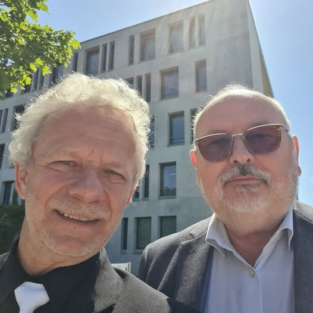
Was beide Autoren verbindet, ist die Arbeit an denselben Geschehnissen aus unterschiedlichen beruflichen Blickwinkeln. Der Strafverteidiger befasst sich mit Ermittlungsakten, Zeugenaussagen, Beweisfragen und den Rechten des Beschuldigten. Der Rechtsmediziner untersucht Verletzungen, Todesursachen und Spuren am menschlichen Körper.
In Tod im Rapsfeld treffen diese beiden Perspektiven unmittelbar aufeinander. Vier authentische Fälle bilden den Ausgangspunkt für Erzählungen über Schuld und Unschuld, kriminalistische Ermittlungen, rechtsmedizinische Erkenntnisse und die mitunter überraschenden Wendungen eines Strafverfahrens.
Dr. Bernd Kopetz ist promovierter Facharzt für gerichtliche Medizin. Er arbeitete an der Militärmedizinischen Akademie in Bad Saarow, wurde 1990 Direktor des Instituts für gerichtliche Medizin unter Bundeswehrkommando und eröffnete 1992 eine rechtsmedizinische Praxis in Bad Saarow.
Er gehört noch zu jener Generation von Rechtsmedizinern, die bei Professor Otto Prokop ausgebildet wurde. Erfahrung, sorgfältige Beobachtung und die Bereitschaft, auch scheinbar eindeutige Befunde immer wieder zu überprüfen, prägen seine Arbeit – und damit auch den gemeinsamen Band.
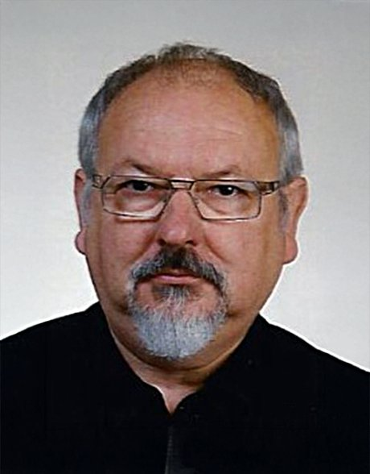
Vier wahre Kriminalfälle
Der Band umfasst vier Geschichten: Tod im Rapsfeld, „Ich habe es getan!“ – Der viel zu frühe Tod der Sari P., Tödliche Selbstfindung – oder In einer anderen Haut und „Augen auf beim Gutschein-Kauf!“.
Der titelgebende Fall beginnt mit einem verstörenden Fund. Bei der Ernte wird mitten in einem Rapsfeld ein bereits stark verwester Leichnam entdeckt. Zunächst ist nicht einmal sicher, wer der Tote ist und wie er dorthin gelangte. Ermittlungsarbeit und Rechtsmedizin müssen gemeinsam versuchen, einem Menschen seine Identität zurückzugeben und die Umstände seines Todes zu rekonstruieren.
Gerade darin liegt das Besondere des Buches: Ein vermeintlich eindeutiges Geständnis kann sich als falsch erweisen, ein vermeintlicher Suizid eine völlig andere Geschichte verbergen, und selbst Vorgänge um digitale Gutscheine können in ein weitgespanntes Geflecht strafrechtlicher Ermittlungen führen.
Drei Fälle im Buchtrailer
Für seinen YouTube-Kanal erarbeitete Bernd Hesse zu den ersten drei Fällen des Buches jeweils einen eigenen Buchtrailer. Die kurzen Filme stellen die Ausgangssituation der Geschichten vor, ohne ihre gesamte Auflösung vorwegzunehmen.
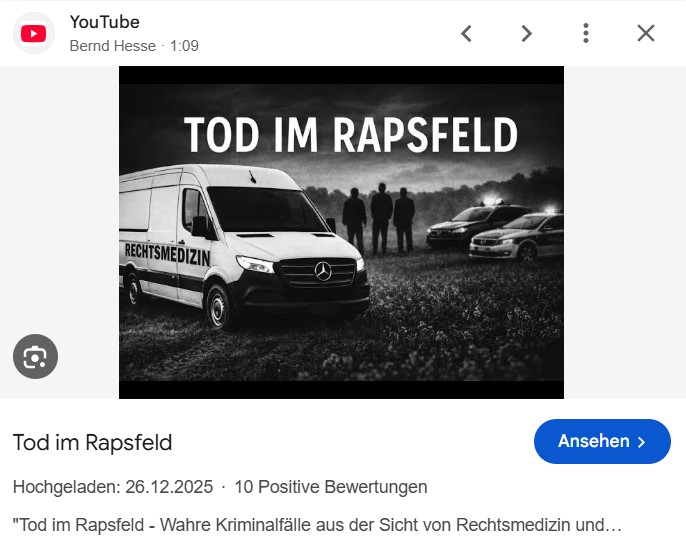
Tod im Rapsfeld
Mitten im Rapsfeld liegt ein Toter. Der Zustand des Leichnams macht selbst die Identifizierung schwierig. Wer war dieser Mensch? Wie kam er auf das Feld – und was ist mit ihm geschehen? Der Fall führt Schritt für Schritt von der kriminalistischen Spurensuche zur rechtsmedizinischen Rekonstruktion.
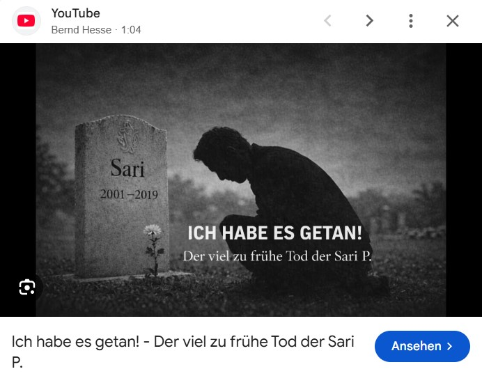
„Ich habe es getan!“
Ein Mann gesteht, die achtzehnjährige Sari P. erwürgt zu haben. Das Geständnis klingt erschreckend konkret. Doch nach der Exhumierung untersucht Dr. Bernd Kopetz den Leichnam erneut. Zungenbein und Kehlkopfskelett zeigen keinerlei Spuren der behaupteten Gewalteinwirkung. Plötzlich steht nicht mehr nur die Tat, sondern auch das Geständnis selbst auf dem Prüfstand.
Tödliche Selbstfindung
Früh am Sonntagmorgen wird der Rechtsmediziner zu einem vermeintlichen Suizid gerufen. Eine Frau wurde erhängt aufgefunden, ihr Ehemann ist verschwunden. Doch die Untersuchung stellt Gewissheiten infrage: Der angenommene Selbstmord ist keiner – und selbst die Identität der Toten erweist sich als überraschend.
Positive Resonanz
Auch die Veröffentlichung des vierten Bandes wurde in der Presse aufgegriffen. Ein ausführlicher Buchtipp würdigte nicht nur die kriminalistische Spannung, sondern gerade die Verbindung von Strafverteidigung und Rechtsmedizin sowie die anschauliche und informative Darstellung der vier authentischen Fälle.
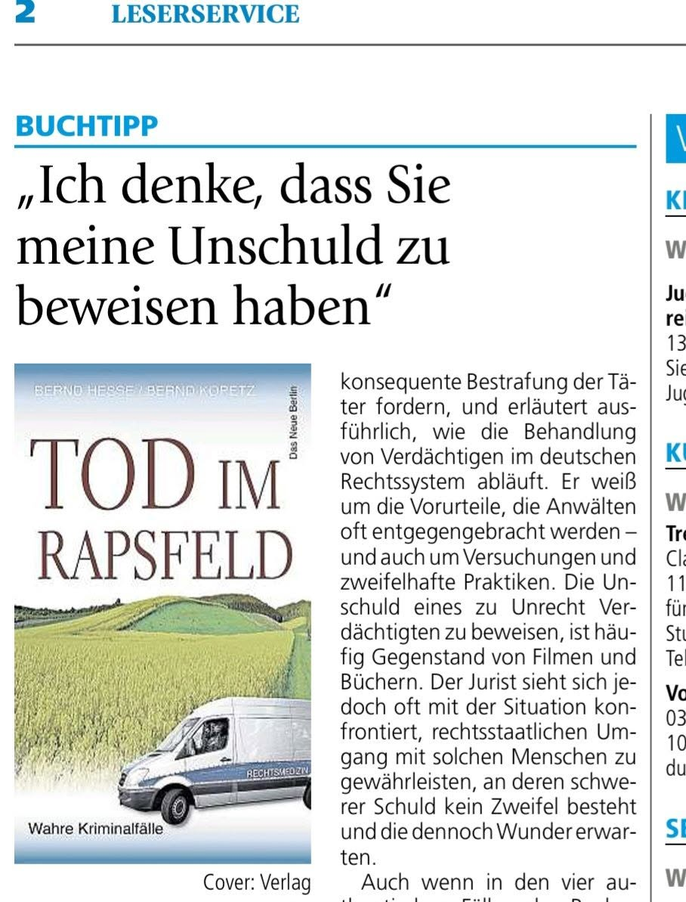
Buchpremiere über den Dächern von Frankfurt (Oder)
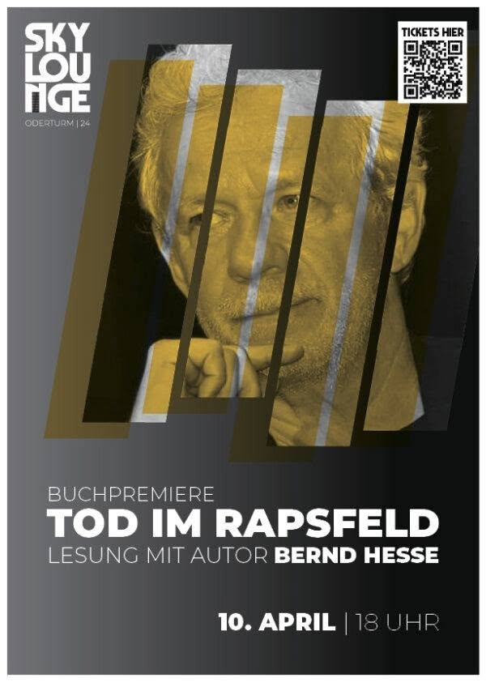
Die Buchpremiere fand hoch über Frankfurt (Oder) in der Skylounge statt. Dort stellten Bernd Hesse und Bernd Kopetz den gemeinsamen Band erstmals ausführlich ihrem Publikum vor.
Aus der bei Die letzte Baustelle entstandenen Idee war damit ein gemeinsames Buch geworden. Rechtsanwalt und Rechtsmediziner berichteten über die Entstehung der Geschichten, über reale Strafverfahren und über die Unterschiede, aber auch die Berührungspunkte ihrer beruflichen Arbeit.
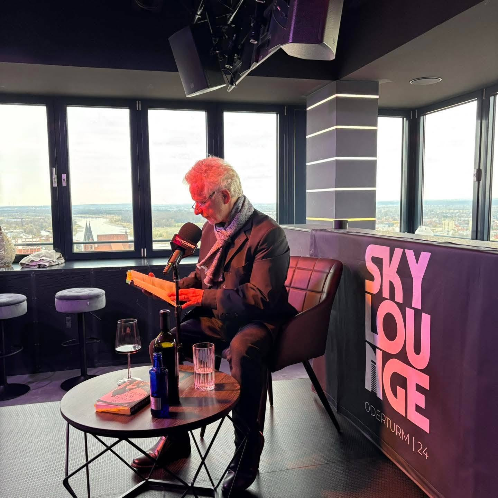
Vier Eindrücke von einem Abend, an dem aus der langjährigen Begegnung zweier Berufswelten auch öffentlich eine gemeinsame Autorenschaft wurde.
Auf Leserreise
Nach der Premiere gingen die neuen Geschichten auf Leserreise. Eine der ersten Stationen war die Mark-Twain-Bibliothek in Berlin. Auch dort standen neben den Fällen selbst die Fragen im Mittelpunkt, die das gemeinsame Buch durchziehen: Was kann ein Strafverteidiger aus einer Akte erkennen? Was vermag die Rechtsmedizin am Körper festzustellen? Und was geschieht, wenn beide Erkenntniswege zu unterschiedlichen Ergebnissen führen?
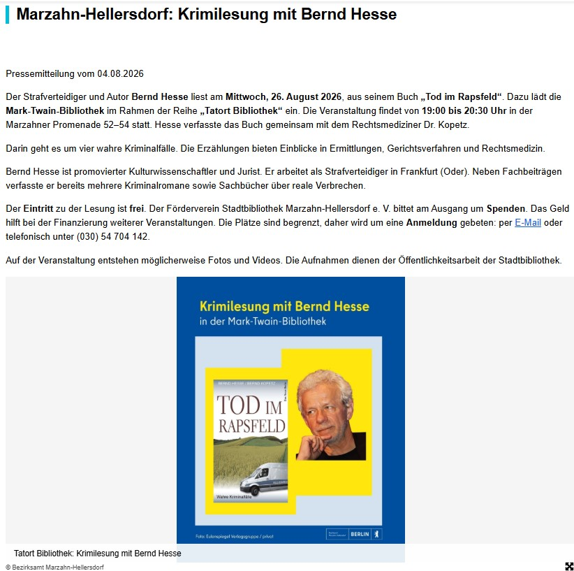
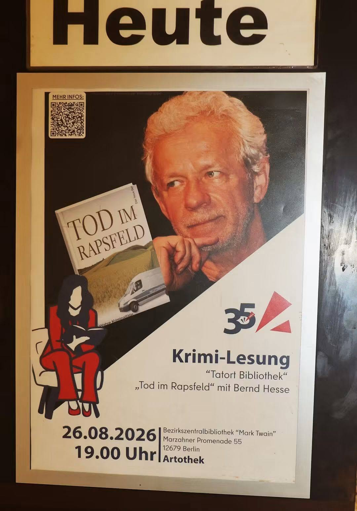
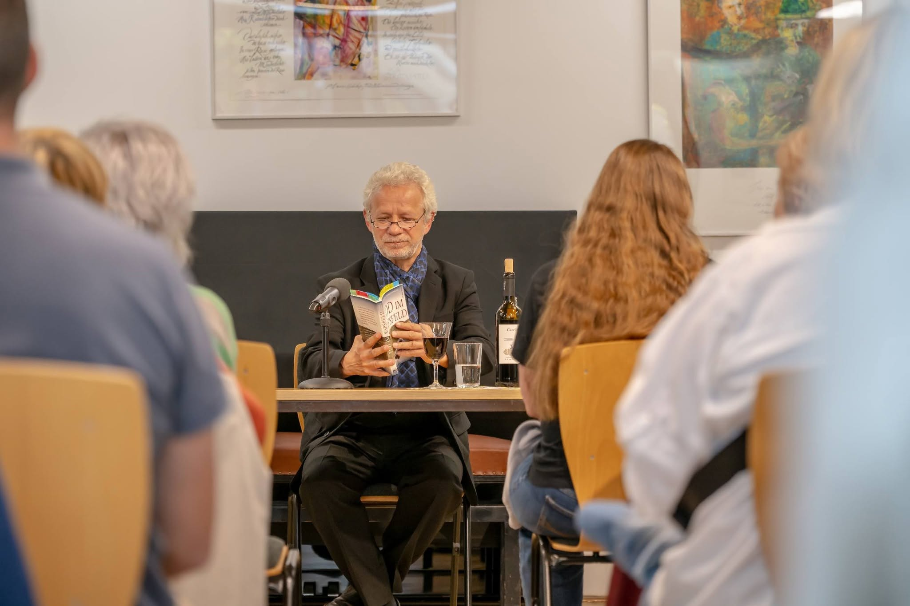
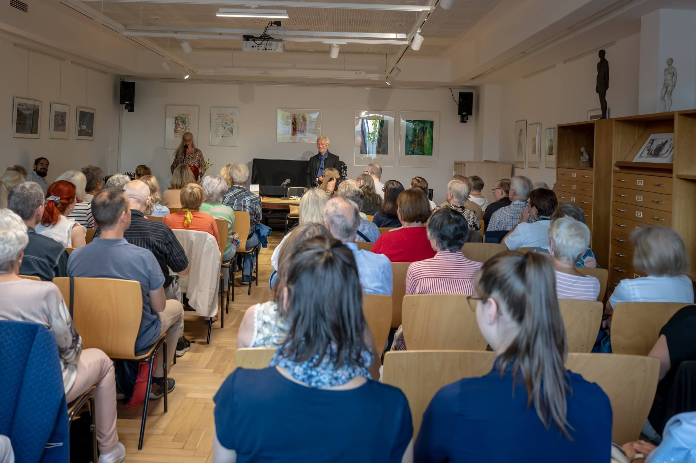
Die Lesungen sind damit mehr als eine Wiedergabe einzelner Buchpassagen. Sie öffnen den Blick auf die tatsächliche Arbeit hinter den Geschichten und geben Raum für die Fragen des Publikums zu Ermittlungen, Strafverfahren, Rechtsmedizin und den Menschen, deren Schicksale sich hinter den Akten verbergen.
Der vierte Band – eine neue Perspektive
Mit Tod im Rapsfeld wurde die Reihe der wahren Kriminalfälle nicht lediglich um einen weiteren Band ergänzt. Erstmals erzählen Strafverteidiger und Rechtsmediziner gemeinsam. Das verändert den Blick auf die Fälle: Aus der juristischen Betrachtung wird ein Dialog zwischen Akte und Körper, Verteidigung und Gutachten, Zweifel und Befund.